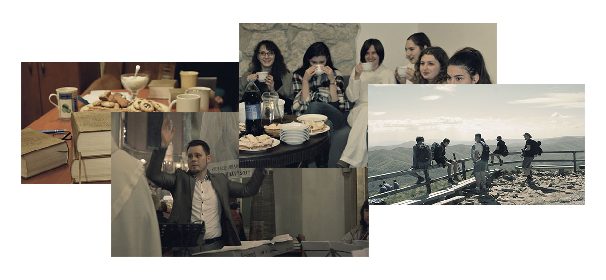

Wrażliwi na obecność
Jesteśmy wspólnotą studentów, którzy nie boją się rozwijać swojej wrażliwości na obecność Boga w naszym życiu. Dzieląc się swoimi spostrzeżeniami i doświadczeniami, uczymy się od siebie nawzajem, budujemy relacje oraz wspieramy w rozwoju duchowym. Podejmując wysiłek kształtowania swojej duszy sięgamy do niewyczerpanego skarbca, jakim jest duchowość karmelitańska, cechująca się prostotą i szukaniem Boga w zwyczajnym toku dnia codziennego. Stąd duchowość w wydaniu karmelitańskim określa się inaczej „mistyką codzienności”.
Rusz z nami w drogę
Święci Karmelu uczą nas, że w każdej naszej czynności możemy odnaleźć Jego obecność. Centrum naszej duchowości jest osobista oraz wspólnotowa modlitwa, która towarzyszy każdemu duszpasterskiemu spotkaniu. Wspólnie przeżywamy i przygotowujemy nasze Msze Święte. Jeśli nigdy nie spotkałeś się z zakonem Karmelitów i duchowością Karmelu, nie bój się, my też cały czas się jej uczymy!
Przygotowanie
Grupa wprowadzająca w wiaręZacznij swoją podróż z Bogiem na nowo. W tej grupie poznasz treści, które pomogą ci lepiej przeżywać oraz rozumieć swoją wiarę.
Wspinaczka
Grupa pogłębiająca wiaręJeśli czujesz się na siłach możesz ruszyć dalej. Teraz prowadzą cię wielcy święci Karmelu i nauczysz się żyć duchem karmelitańską.
Nasze spotkania
Spotkania rozpoczynamy od wspólnej adoracji, w takcie której stajemy w ciszy przed Chrystusem obecnym w Najświętszym Sakramencie. Następna część spotkania odbywa się w podziemiach klasztoru, a jej forma jest zależna od danego tygodnia. Zapraszamy do nas gości, którzy umacniają nas świadectwem spotkania Bogiem. Są to przeróżni ludzie, niekoniecznie będący osobami duchownymi, którzy dzielą się swoim doświadczeniem Boga w swych środowiskach, każdy na swój sposób i odpowiednio do swojej prywatnej historii życiowej.
Najbliższe spotkaniaA w niedzielę
Również w niedzielę mamy co robić. Służymy i śpiewamy Bogu podczas liturgii. Ta niedzielna msza święta jest przeznaczona głównie dla studentów i absolwentów. Po niej mamy możliwość spotkania się razem na chwilę rozmowy.
16:00Próba chóru
18:00Msza święta
Kościół oo. Karmelitów Bosych, ul. Rakowicka 18
Wybierz sam
Również w niedzielę mamy co robić. Służymy i śpiewamy Bogu podczas liturgii. Ta niedzielna msza święta jest przeznaczona głównie dla studentów i absolwentów. Po niej mamy możliwość spotkania się razem na chwilę rozmowy.
Poznaj nasze grupy 